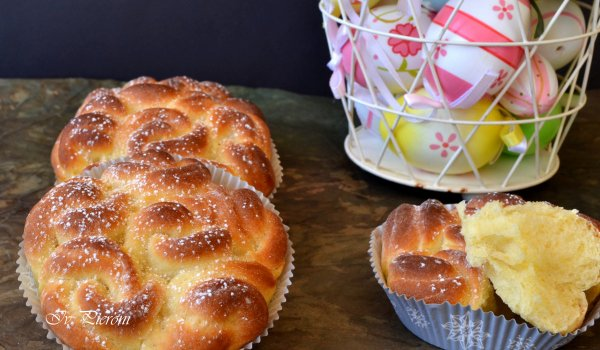

Лимонови козуначета

Информация за рецептата
Традицията за замесването на обреден хляб за Великден датира от края на 16-ти и началото на 17-ти век. Според вярванията, козунакът символизирал тялото на Христос, а в средата се поставяло червено яйце – символ на Христовата кръв. С годините рецептите се изменяли и козунаците станаха доста разнообразни по вид.
Необходими продукти
- брашно - 350 г
- прясно мляко - 140 мл
- жълтъци - 2 бр.
- краве масло - 80 г
- мая - 10 г от кубче
- захар - 3 с.л.
- лимонова кора - настъргана от 1 лимон
- ванилова захар - 1 пакетче
- сол - щипка
Начин на приготвяне
- Затоплете леко прясното мляко, добавете натрошената мая, 1 супена лъжица захар и 1 с.л. брашно.
- Покрийте купата с парче найлон и оставете на топло, докато течността шупне.
- В купа пресейте брашното с щипка сол. Добавете двата жълтъка, ваниловата захар и настърганата лимонова кора. Излейте шупналата смес и започнете да месите.
- Докато месите, прибавяйте по малко от омекналото краве масло. Измесеното тесто сложете в купа, покрийте с парче найлон и кърпа. Оставете купата на топло, докато тестото удвои обема си.
- Пригответе си плитки хартиени чашки за мъфини и по големи форми за тарталети. Ако нямате, може да ползвате гнездата за мъфини.
- На набрашнена повърхност разточете тестото за козунак. С чаша или формичка с д.5 см изрежете дискове. Групирайте ги по три в редичка с леко застъпване.
- Завийте дисковете на рула и срежете на две половини. Наредете ги по шест във всяка хартиена чашка и сложете в металната форма.
- Приберете в леко затоплена фурна, докато козуначетата удвоят обема си.
- Подсладете 1 чашка с прясно мляко с 1 с.л. захар. Намажете козуначетата с четка.
- Загрейте фурната на 170°C. На дъното и поставете купичка с вода.
- Изпечете за около 25 мин, като внимавате да не се препекат отгоре, а останат сурови вътре.Ако е необходимо, ги покрийте с парче алуминиево фолио.
- Поръсете готовите лимонови козуначета с пудра захар.
Допълнителна информация
Ако имате възможност, си купете домашни продукти, особено яйцата и млякото. Те са най-важни за вкуса и качеството на вашия козунак.